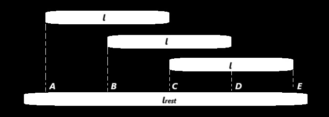
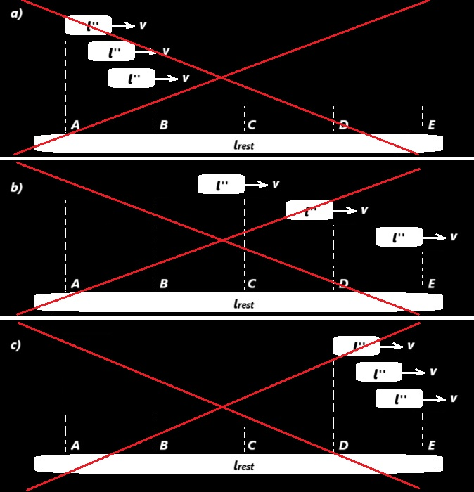
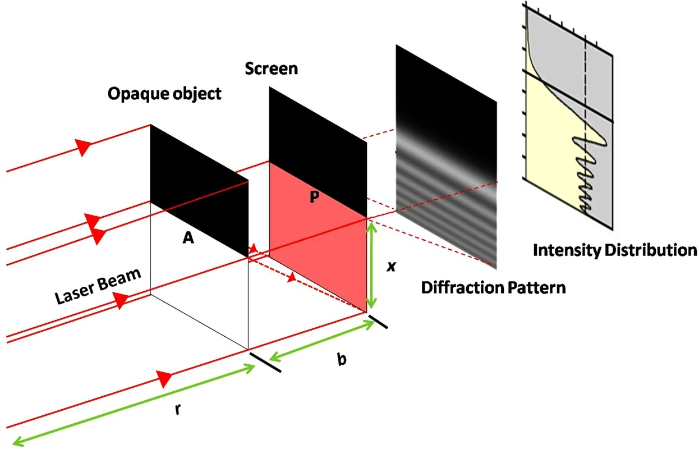
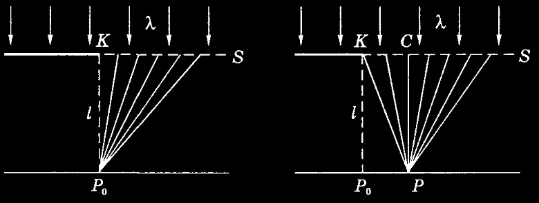
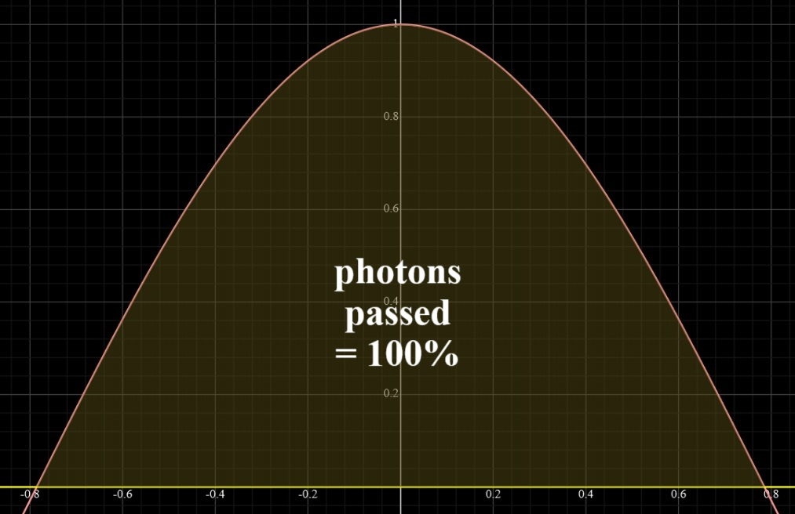

Two great theories based on a common interpretation of interference. What is wrong with wave-particle duality interpretation and the consequences that follow from it
The general basis for the special theory of relativity and for quantum mechanics. What is interference physically really like¶
Fundamentals of the special theory of relativity. The inertial frame of reference. The immobile frame of reference¶
For further description, it is necessary to introduce a new term.
An immobile frame of reference (ImFR) is an inertial frame of reference (IFR) associated with an object characterized by zero shift of cosmic microwave background radiation (zero dipole anisotropy). The ImFR can be associated with different objects, but their relative velocity is zero. It should be particularly noted that the ImFR differs from the reference frame associated with the Earth by only a few hundred kilometers per second (370 km/s). This is the main reason why most calculations according to the theory of relativity are close to real experimental results.
Next, we will need several formulas of the special theory of relativity.
Time dilation or space compression factor:
\(1/\gamma= \sqrt{1 - \frac{v^2}{c^2}}\), (1)
where \(v\) is the velocity of the object relative to IFR or ImFR.
As is known, if IFR \(K'\) moves relative to IFR \(K\) with a constant velocity \(v\) along the \(x\) axis, and the origin of the spatial coordinates coincide at the initial moment of time in both systems, then the direct Lorentz transformations have the form:
\(x'={\frac {x-vt}{\sqrt {1-v^{2}/c^{2}}}}\) , \(y' = y\) , \(z' = z\) , \(t'={\frac {t-(v/c^{2})x}{\sqrt {1-v^{2}/c^{2}}}}\), (2)
where \(c\) is the speed of light, the primed values are measured in the system \(K'\), unprimed — in \(K\).
What exactly do we calculate by means of the special theory of relativity¶
Thought experiment 1 description:
In ImFR, there are two spacecrafts in the same place and time at the beginning of a thought experiment. The first one is always at rest and the second one moves at a speed of \(v\) relative to ImFR. At the beginning of the thought experiment, the clocks on the spacecrafts are synchronized. After a time of \(t_1\), according to the clock of the first observer, the second spacecraft will pass the distance \(l=vt_1\). For an observer on the second spacecraft, time \(t_2=t_1/\gamma\) will pass due to the effect of time dilation. In fact, if a ruler is placed along the axis of motion of the second spacecraft, which rests in the ImFR, then the second observer, after time \(t_2\), will fix the traveled distance \(l\) on it. Then we calculate the speed at which the spacecraft of the first observer was moving away according to the clock of the second observer: \(v'=l/t_2=v\gamma\). These are the real (actual) characteristics of objects - location, length, speed and time on the clock. That is, these are the characteristics of objects that we have calculated, and do not see. In order to see, it is necessary to additionally take into account the time for the flight of photons from the source to the desired observer. However, during the flight of these photons, the locations and other real (actual) characteristics of the objects will change. Above, we did not take into account the time for the flight of photons from the source to the desired observer.
If we apply special relativity theory with Lorentz transformations to change IFR for this case, then the result will be fundamentally different and create a mathematically correct illusion:
\(v''=l''/t_2=\frac {(l/\gamma)}{(t_1/\gamma)}=v\).
However, we know perfectly well that \(l''=l/\gamma\) is only the apparent or illusory length of the ruler, and not the real (actual) one [14,15]. This also means that \(v''\) is also some kind of apparent or illusory speed, and not a real (actual) one. As a result, when using the theory of relativity here, we have obtained precisely the apparent or illusory characteristics of objects, and not the real (actual) ones. Here, the time for the flight of photons from the source to the observer is taken into account to some extent, which means that during the flight of these photons, the locations and other real (actual) characteristics of objects will change. We get that if we need to calculate the real characteristics of objects, and not illusory ones, then the theory of relativity cannot be applied.
Directly visible length¶
What does the observer of the second spacecraft see directly from the point of view of the theory of relativity? Photons from the beginning of the ruler A and from the end of the ruler B must simultaneously enter the detector (the observer's eye). Figure 1 shows the beginning of the experiment, and Figure 2 shows the end of the experiment. In Figures 1 and 2, the distance between the axis of motion of the ruler and the spacecraft is shown only for clarity, but in fact it is zero.

Figure 1 – The beginning of the experiment for the observer of the second spacecraft from the point of view of the theory of relativity
In Figure 1, the length AB' is the directly visible length of the ruler from the point of view of relativity theory for the observer of the second spacecraft. AB' > AB.
Figure 2 – The end of the experiment for the observer of the second spacecraft from the point of view of the theory of relativity
In Figure 2, the length A'B is the directly visible length of the ruler from the point of view of relativity theory for the observer of the second spacecraft. A'B < AB.
In this thought experiment, the directly visible length of the ruler from the point of view of relativity theory for the observer of the second spacecraft is in the range from A'B to AB' (A'B < AB < AB'), which is not a constant \(l''\). It should be particularly noted that due to the principle of relativity in the special theory of relativity, we can choose an observer on Earth with certain minor assumptions to take the place of the observer of the second spacecraft. Accordingly, this observer will see a ruler. The directly visible length of this ruler will be in the range from A'B to AB', which is not a constant \(l''\). It is important to understand that we get this exclusively by means of the special theory of relativity.
As a result, \(l\) is the real (actual/proper) length of the ruler. The length in the range from A'B to AB' is the directly visible length of the ruler from the point of view of relativity theory for the observer of the second spacecraft. As we can see, \(l''=l/\gamma\) is just a mathematical illusion, since it is not the real (actual/proper) length of the ruler and is not the directly visible length of the ruler in the range from A'B to AB'.
All this means that when using the theory of relativity, we expect to get real (actual) or at least directly visible results (lengths, locations, speeds, time, and other characteristics of objects) that can be used in practice. The results recorded by the second observer. However, we only get a set of numbers that do not reflect the current reality around the second observer, or at least what is directly visible to him. We got only a mathematical illusion, useless in practice, which, although it preserves the time line of the experiment, does not reflect what is happening around the second observer.
As a result, first we calculated the real (actual) locations, speeds, time, and other characteristics of objects, and after applying special relativity when changing IFR, we calculated the illusory ones. Are the laws invariant in these inertial frames of reference? No, because in the first case we describe reality, and in the second an illusion. Therefore, when using the theory of relativity, the first postulate is violated.
The special theory of relativity describes the behavior of each object mathematically correctly in each specific experiment. The reason is that for this object, the sequence of events and its proper time line do not change when the IFR is changed, and the behavior of the surrounding objects adjusts accordingly. However, this mathematical description is just an illusion that does not allow us to understand what is really happening to the objects under explore.
Length in the special theory of relativity¶
Let's figure out exactly what kind of value \(l''\) we measure by means of special relativity.
Description of the thought experiment 2:

Figure 3 – Measuring the length of a ruler by a moving observer
Consider Figure 3. Let's take a ruler with its proper lenght \(l\), at the ends of which there are sources of single photons capable of simultaneously (in the inertial frame of reference of the ruler itself) emitting photons perpendicular to the ruler. Let's put a very long array of detectors parallel to the ruler, which is capable of moving at a selected speed \(v\). The distance between the ruler and the array of detectors tends to zero. Then we get that no matter how fast the array of detectors moves (even at zero speed, even at a speed close to the speed of light), the distance between the detectors that recorded this pair of single photons will be equal to \(l\). Only the clock readings of each detector will differ (if we synchronize all these clocks in the inertial frame of reference of the detector array). That is, one photon will be detected at \(T_1\) on the clock of first detector, and the second one will be detected at \(T_2\) on the clock of second detector. However, no matter how we change the time on this clock later, this will not change the fact of detecting the pair of photons at the distance of its proper length \(l\).
As we can see, \(l''=l/\gamma\) is not the real (actual/proper) length of the ruler \(l\), is not the directly visible length of the ruler in the range from A'B to AB' (from thought experiment 1) and is not the length of \(l\), which the measurement object itself sends to us in as a synchronously emitted pair of single photons (synchronously in the measured object's proper IFR).
Are the photons emitted at different times in the proper IFR of the measured object a reflection of its length? Moreover, the speed of the detectors determines exactly when the measured object should emit single photons. Different pairs of photons are required, emitted at different times with the required interval for each IFR. That is, these are physically different experiments. By this method, we can get absolutely any desired length of the object, it is only necessary to choose the right moments of emission of a pair of single photons. Therefore, \(l''\) is a mathematical illusion required for the correct functioning of the special theory of relativity.
In practice, if we follow not single photons, but the radiation of the entire ruler, then each detector from the array of detectors will simultaneously receive photons from different places in the line. In fact, each detector will record the directly visible length of the ruler in the range from A'B to AB' (from thought experiment 1).
As a result, we get that in practice it is almost impossible to fix the length of \(l''\). The only option is to have a pair of photons radiate from the ends of the ruler at a specific time with a specific asynchronous interval in the IFR of the ruler. But according to this scheme, we can fix any desired length of the ruler at all.
What is the basic reason for such special requirements for the length measurement scheme in special relativity? The answer lies in the concept of "simultaneity" and the clock "synchronization" scheme.
The concept of "simultaneity" of the special theory of relativity. Synchronization or desynchronization¶
Synchronization in one IFR is desynchronization in another IFR. Speeding up the object in a time tending to zero, we get that the clock in any part of the object is still synchronous with the base IFR and subsequently only clock ticks slows down, or rather increases the duration of their period in caesium-133 atoms or any other periodic processes compared to the clock of the original ImFR. If we do not "synchronize" the clock immediately after acceleration, but receive a radiated pair of single photons from the object from thought experiment 2 (photons are emitted simultaneously in the object's IFR), then we will fix the length of \(l\) simultaneously by the detectors' clocks. This means that it is the method of "synchronizing" the clock that creates the illusion of the length of the object \(l''\).
Subsequently, by performing a "synchronization" operation according to the special theory of relativity, we create a spatial desynchronization with the clock of the basis IFR. However, we can choose any clock that has experienced acceleration for the base clock on which we will not change the time, and for all other clocks shifted along the acceleration axis, we must set the required values. However, they will all experience after that a general slowdown in the process periods and, accordingly, a slowdown in time of equal magnitude.
We get that it is the clock simultaneity/synchronization/desynchronization scheme in each inertial frame of reference that creates the mathematical illusion of length \(l''\). In practice, we should ask the ruler to send each photon (from a pair of single photon sources) at a different well-defined time in order to receive them synchronously in our IFR and fix the length of \(l''\).
In fact, using the "synchronization" method in one IFR, we create a desynchronization in another. The reason for this is that the assumption is made about the constancy of the speed of light in all IFRs.
So what is the length of \(l''\) as a result? This is primarily a characteristic of the magnitude of the desynchronization of the ruler's clock, combined with the relative speed of movement, which is secondarily superimposed on the ruler's proper length \(l\). \(l''\) is a value reflecting the degree of desynchronization of the source clock, superimposed on the ruler's proper length, which shifts with speed relative to the detectors. But this cannot be called a lenght of the ruler in any way.
This is the power of the terms of the theory of relativity. We can define the term in such a way that as a result, in this case, we get any desired "length" of the object.
So, \(l''\) is not a real (proper) length and not a directly visible length. It does not reflect the actual location of the object's boundaries (reflects only its proper length) and does not reflect the boundaries directly visible to the observer. It turns out that in one IFR we take the locations of the object boundaries where they are directly located - real characteristics and compare them with another IFR, in which we take locations where there are no object boundaries directly - illusory characteristics. It cannot be said that these IFRs are equal.
Moreover, taking the illusory length \(l''\) as a basis, the illusory velocity \(v''\) is calculated (from thought experiment 1), which also does not reflect the real change in the position of the object over time.
As a result, in different IFRs, the special theory of relativity compares the real characteristics of objects, that is, length, location, speed, clock readings, etc. with the characteristics of objects that do not exist, that is, illusory, created due to the desynchronization of clocks and kinematic effects associated with the relative movements of objects and the fixation of "simultaneity" on the desynchronized clock.
If we take two rulers with their own length \(l\) and accelerate one to the speed \(v\), then, according to the theory of relativity, the "length" of each moving one will be \(l''\). But in reality, the lengths have not changed. It's all about the term "length" and the fact that for this we need to reconfigure the clock readings.
In fact, the theory of relativity renames the real length into its proper length, and the illusory length simply into length. And this length does not reflect the actual size of the ruler or the current location of its borders. It is needed only to match the Lorentz transformations.
Relativity and two linear arrays of detectors¶
Figure 4 shows the object under study (a solid object or an array of elementary particles) and a linear array of detectors that rest in an ImFR (specialized inertial reference frame. See above) at the beginning of the experiment. The linear array of detectors always rests in the ImFR.
Figure 4 – The object under study and the linear array of detectors at rest in the ImFR
Let's accelerate the object under study to the speed of \(v\) in a time tending to zero (for example, in a nanosecond) relative to a linear array of detectors. What will the linear array of detectors detect then? Each detector will detect the presence of parts of the object under study opposite it (Figure 5a) and there will be no length contraction of \(l''=l/\gamma\) (Figures 5b, 5c, 5d).

Figure 5 – The object under study and the linear array of detectors. The object under study was accelerated to the speed of \(v\) in a time tending to zero a) experimentally recorded result b, c, d) variants predicted by the special theory of relativity, which are not recorded experimentally
Even worse, according to the special theory of relativity, the length contraction of the object under study should be instantaneous or teleportation. That is, even based on the non-zero acceleration time of the object under study, the compression speed should be faster than speed of light with the result shown in one of Figures 5b, 5c, 5d, which does not correspond to experimental data and also contradicts the maximum speed limit of the theory of relativity.
For skeptics who might say: "right now we can't accelerate the object under study to relativistic speeds". We can take elementary particles that can easily accelerate to relativistic speeds, such as electrons. Make an extended ruler with a length of \(l\) from these particles. Then conduct the experiment described above. Naturally, no teleportation or superluminal particle movements will be observed.
As a result, the special relativity predicts that immediately after the acceleration of the object under study or elementary particles, the length \(l''=l/\gamma\) will be measured, but superluminal compression will not be detected experimentally and the measured length will remain \(l\). This is already enough to prove the inconsistency of the theory of relativity with experimental data.
Once again, in simple terms. It turns out that in one tick or period of the clock (let it be one nanosecond), the measured length of the object under study should change from \(l\) to \(l''\). In fact, no one forbids choosing the length of the object under study \(l\), equal to several billion light-years (Figure 4). Then, in a nanosecond, for a resting array of detectors with clocks, the location of the object under study should shift by a billion light-years (one of the options shown in Figures 5b, 5c, 5d). Of course, this does not correspond to experimental data. It should also be noted that in the interpretation of the theory of relativity, different parts of the object under study must travel different distances in a nanosecond.
Let's say you still trust the theory of relativity. Then we will bring the situation to the point of absurdity. Let's take three objects under study, which in the future we will simultaneously accelerate in a time tending to zero. Let's also take an ultra-long resting array of detectors for measuring lengths. We get the picture shown in Figure 6.

Figure 6 – Three objects under study and an ultra-long array of detectors at rest in the ImFR
Then, after simultaneous acceleration of the three studied objects relative to the clocks of resting ultra-long array of detectors, according to the theory of relativity, the measurement result should be represented by one of the variants in Figure 7. It is possible to sort through any other relative positions of the three studied objects with the measured length \(l''=l/\gamma\), but it is impossible to eliminate the problem of superluminal movements of their parts.

Figure 7 – Three objects under study and an ultra-long array of detectors. The three studied objects accelerated to the speed of \(v\) in a time tending to zero a, b, c) variants predicted by the special theory of relativity, which are not recorded experimentally
Comparing, for example, Figure 6 and Figure 7c, we can see that the first object under study instantly (during acceleration time tending to zero. For example, in a nanosecond) travelled the empty space from C to D, which can be equal to a billion light years. Of course, this contradicts any experimental data, and we will not be able to achieve such a result simply by accelerating an object to the speed of \(v\) in a time tending to zero. As we can see, based on the absurd results in Figure 7, the theory of relativity predicts faster-than-light movement of objects or their parts, which contradicts the speed limit in the theory itself and experimental data. Even worse, the three objects under study must return to the initial state shown in Figure 6 if we slow them down to zero speed relative to the ultra-long detector array, which is at rest.
Proof of the inequality of inertial frames of reference¶
This kind of experiment is easily feasible with our current technologies. For example, to simplify the experiment, it is enough for us to take two electrons at the ends of a ruler of length \(l\) in the ImFR (the Earth's IFR will fit with a small error). The acceleration of the electrons can be synchronized by a flash of light from the center of the ruler to the edges. Clocks are synchronized by the same flash based on the distance traveled by the photons of the flash and the speed of light of the photons. Synchronization is necessary because otherwise the object's proper length will change. This is unacceptable from the perspective of deriving the Lorentz contraction formula for all IFRs, as it is physically possible to deform objects without any relativistic effects, and we need to understand the essence only of the relativistic contribution. Based on the predictions of the theory of relativity, after acceleration, a pair of electrons from the ends of the ruler should keep a distance equal to \(l''\), which is easy to fix by the time they pass by one of the detectors. However, experimentally, the distance between them will remain \(l\), which proves the fallacy of the theory of relativity.
Again, we get that the method of measuring the length is based on clock desynchronization and does not reflect the actual location of the object.
If you try to achieve a length equal to \(l''\) by any means, then of course you can accelerate the electrons asynchronously with the required time interval. But then the proper length of the ruler between a pair of electrons will also change and become equal to \(l''\). This violates the first postulate of the theory of relativity, which is unacceptable.
As a result, if we accelerate the electrons synchronously in ImFR, then in ImFR the length of the ruler at rest will be equal to \(l\), and the length of the ruler moving at a speed of \(v\) will also be equal to \(l\). In this case, in IFRv (IFR moving relative to ImFR at a speed of \(v\)), the length of the ruler moving at a speed of \(-v\) will be equal to \(l''\), and the length of the ruler at rest will be equal to \(l\).
If we perform asynchronous acceleration with the required time interval in ImFR, then in ImFR the length of the ruler at rest will be equal to \(l\), and the length of the ruler moving at a speed of \(v\) will be equal to \(l''\). In this case, in IFRv (IFR moving relative to ImFR at a speed of \(v\)), the length of the ruler moving at a speed of \(-v\) will be equal to \(l''\), and the length of the ruler at rest will also be equal to \(l''\).
It should be especially noted that after asynchronous acceleration of an object with the required time interval in ImFR, it experiences a real physical compression of \(\gamma\) times. Also, after synchronous acceleration of an object in IFRv, it experiences a real physical stretching of \(\gamma\) times. In this case, the distances and forces of interaction between the molecules, atoms and electrons of the object will be radically different before and after the accelerations, which will lead to different behavior of the object. As we know, this is unacceptable from the point of view of the first postulate of the theory of relativity, since the behavior of an object will be different under the same conditions, which can be distinguished. In this case, IFRs are unequal, since the same actions in different IFRs lead to different results. After synchronous acceleration in ImFR, the object does not change in size, and after the same synchronous acceleration in IFRv, the object experiences a real physical stretching of \(\gamma\) times. After asynchronous acceleration in ImFR, the object experiences a real physical compression of \(\gamma\) times, and after the same asynchronous acceleration in IFRv, the object does not change in size.
These examples clearly prove that IFRs are unequal and that a problem similar to the twin paradox exists in all IFRs, experimentally violating the first postulate of the theory of relativity.
Now let's fall even deeper into the rabbit hole and look at the source of the problems of the theory of relativity.
The constancy of the speed of light in any IFR. Interpretation of the results of the Michelson-Morley experiment and others like it¶
Is the speed of light constant in any IFR? Does the Michelson-Morley experiment and similar experiments prove this? No, because ordinary mirrors, half-transparent mirrors and other objects that are not absolute vacuum can re-emit photons at different time intervals depending on the direction. Moreover, this process may not be continuous, but discrete in nature with a certain period. That is, for example, even when falling back on a half-transparent mirror at different times, its atoms re-emit photons into the detector at the same time. This leads to an illusory constancy of the speed of light in the experiment. This interpretation of the results is supported by the fact that the speed of light in the medium is slowing down, which indicates the need to spend time on constant re-emission by the atoms of the medium. In fact, the interpretation of this experiment by means of special relativity absolutely does not take into account the additional time spent on passing through the medium or reflection by mirrors, which does not correspond to reality. It should be especially noted that these are precisely the facts according to experimental data that are not taken into account in the interpretation of this experiment of the special theory of relativity. We obtain that for the constancy of the speed of light in any IFR, the theory of relativity used assumptions about the constancy of the rate of photon re-emission, the constancy of the speed of photon passage in the medium, the absence of discreteness and periodicity of these processes. And all these assumptions should be independent of orientation in space.
Interference, diffraction and interpretation of experimental results¶
It is further necessary to understand the basis of probability in the macrocosm and at the quantum level: On the non-probabilistic nature of the universe.
Let's move on to the main assumption, which was taken as a basis in the Michelson-Morley experiment, namely, the interpretation of diffraction and interference, that is, to the wave-particle dualism.
For understanding, consider the experiment with two slits in the theory of wave-particle interpretation shown in Figure 8.

Figure 8 – Interpretation of the double-slit experiment according to the theory of wave-particle dualism
What is observed is usually interpreted as the superposition of waves from two sources with their amplification in phase or attenuation in antiphase. This was an assumption that agreed well with the experimental data. However, we will get the same result if we assume that there are no waves, and all that is recorded experimentally are particles that, after interacting with the barrier atoms, were re-emitted with the appropriate distribution. In this case, it becomes clear why even single photons generate an interference pattern without any fantastic simultaneous passage through both slits. The observer effect is also understandable, since we physically influence the re-emission system in order to understand which slit the particle passed through.
The quantum eraser experiment should also be mentioned. The addition of a linear polarizer on the first path filters out some of the photons that complemented the interference pattern on the second detector. That is, photons are also physically detected, but we do not take them into account. In fact, adding a linear polarizer on the first path does not remove photons on the second, but we simply exclude them from the result. Physically, the second detector registers two interference patterns superimposed with an offset, which in total gives a picture without interference. However, by adding a linear polarizer on the first path, we exclude photons from one of the interference patterns from the result of the second detector, which means that we leave only one interference pattern in the result. As a result, there is no magic of quantum mechanics, "delayed choice" and "spooky action at a distance", but only an incorrect interpretation of what is happening in the experiment.
As a result, diffraction, interference, Newton's rings, polarization and all the rest are just the re-emission of particles by barrier atoms with the corresponding distribution of particles along vectors. The key point proving that light is particles, not waves, is the fact that there is no possibility of conducting an experiment in which the waves in the antiphase would extinguish each other. In fact, the theory of wave-particle dualism makes it possible to divide a beam of monochrome coherent photons into two parts that have passed through different paths and hit the detector or screen in antiphase and completely neutralized each other. But this cannot be reproduced experimentally. Moreover, there is not even a drop in intensity, which confirms the concept of re-emission with particle redistribution.
Special mention should also be made of the half-plane diffraction experiment shown in Figure 9.

Figure 9 – Experiment on diffraction on a half-plane with an image of the intensity distribution of laser radiation
Its interpretation according to the wave-particle dualism is shown in Figure 10. Here, an obstacle is skirted with the propagation of particles into the area of geometric shadow and stripes with different particle intensities on the screen. There is no superposition of waves from two or more sources, since physically the atomic boundary of the half-plane is one source. However, in the interpretation of the wave-particle dualism, there must be sources of secondary waves in the plane of the half-plane (see Figure 10). And secondary sources should be located in an empty space. This contradicts reality, since there is no experimental data proving that the void can become a source of re-emission and, accordingly, secondary waves. As a result, this experiment consists in a simple re-emission by atoms of the edge of the half-plane with an appropriate vector distribution.

Figure 10 – Interpretation of the half-plane diffraction experiment according to the theory of wave-particle dualism
As a result, we have two visual types of experiments that prove the absence of wave-particle dualism in our universe and confirm the particles concept of objects in universe. The first type of experiment is that it is impossible to neutralize or even reduce the intensity of waves in antiphase for two parts of a separated monochromatic coherent photon beam. Although this should be implemented experimentally according to the wave concept. The second type of experiment is diffraction on a half-plane, where the sources of re-emission of secondary waves must be certain points of void, which contradicts all available experimental data on the interaction of photons or any other particles with the void. Photons, like any other particles, cannot be re-emitted by the void - this is an experimental fact. It is well known that if a theory contradicts experimental data, then it is erroneous. Based on this, the theory of wave-particle dualism is erroneous and all observed phenomena and experiments can be explained purely within the framework of particle theory.
Let's figure out what exactly happens with diffraction and interference. Are there scientifically proven experimental facts that the direction of photons changes in a vacuum without external influences? No. All photons or any other particles, which are not affected by anything or the effects are compensated, move uniformly and in a straight line. When does the interference or diffraction pattern occur? Only after interacting with the atoms of the obstacles. That is, it is the atoms of the obstacles that are responsible for the deviation of the trajectories of the particles (re-emission) with a specific vector distribution. Let's look at what exactly happens using the example of a photon. It is well known that the energy and, consequently, the frequency of a photon is quantized. Why? Since a photon is a group of quantum photons and their number determines the energy and frequency of the resulting photon. What happens when photons interact with the atoms of an obstacle? Apparently, the electrons of the obstacle interact with photons and re-emit them with an appropriate vector distribution. Moreover, the higher the energy and frequency, that is, the number of quantum photons in a photon, the more difficult it is for an electron to deflect a photon and the smaller the angles of re-emission. The same thing happens in the case of interference or diffraction with other particles. And again, no magic. Everything is simple and clear.
It is also necessary to mention an experiment with three or more polarizers rotated at different angles, which is interpreted as an irrefutable proof of the quantum mechanical nature of the universe. Further, we consider that the polarizers are ideal and pass 50% of the photons that were generated with a uniform probability distribution of their polarization plane. If we put two polarization filters at an angle of ninety degrees, it is assumed that the light does not pass, since the first one blocks one direction of the wave, and the second one is perpendicular, that is, everything else. And because of this, photons do not pass through. If we take three polarizers \(0^o\), \(45^o\), \(90^o\), then the light partially passes through. Why? The problem is a misinterpretation of the photon and the mechanism of action of the polarizer.
If a photon passes through a polarizer, it is re-emitted with a cosine distribution of the plane of polarization relative to the axis of this polarizer. Namely: \(cos(2x)\), where \(x\) is the angle between the axis of the polarizer that re-emits the photon and the plane of polarization of the emitted photon, also \(-\pi/4 \leq x \leq \pi/4\). In addition, the polarizer passes only photons with a polarization plane in the range \(-\pi/4 \leq x \leq \pi/4\) relative to the axis of this polarizer. It is easy to understand that if the axes of the polarizers coincide, then all photons pass between them. If there is an angle between the axes of the polarizers, for example, \(\pi/8\; (22.5^o)\), then the second polarizer will not pass \(\int_{-\pi/4}^{\pi/4} cos(2x) \,dx - \int_{-\pi/4}^{(\pi/4-\pi/8)} cos(2x) \,dx \approx\)\(1-0,85355\approx0,14645\approx\)\(14,645\%\) photons.
Figure 11 shows a picture of the passage of all photons through the polarizer (\(\int_{-\pi/4}^{\pi/4} cos(2x) \,dx\)) if the angle between the axes of the polarizers is \(0^o\).

Figure 11 - Picture of the passage of all photons through the polarizer (\(\int_{-\pi/4}^{\pi/4} cos(2x) \,dx\)) if the angle between the axes of the polarizers is \(0^o\)
Figure 12 shows a picture of photons passing through the polarizer (\(\int_{-\pi/4}^{(\pi/4-\pi/8)} cos(2x) \,dx\)) if the angle between the axes of the polarizers is \(\pi/8 \; (22,5^o)\).

Figure 12 – A picture of photons passing through the polarizer (\(\int_{-\pi/4}^{(\pi/4-\pi/8)} cos(2x) \,dx\)) if the angle between the axes of the polarizers is \(\pi/8 \; (22,5^o)\)
If there is an angle between the axes of the polarizers, for example, \(\pi/6 \; (30^o)\), then the second polarizer will not pass \(\int_{-\pi/4}^{\pi/4} cos(2x) \,dx - \int_{-\pi/4}^{(\pi/4-\pi/6)} cos(2x) \,dx =\)\(1-0,75=0,25=\)\(25\%\) photons. We get that it doesn't matter how many polarizers the photon has passed before. It is important that each photon will be re-emitted when passing through the polarizer and will change its own plane of polarization. As a result, the more polarizers deflected by the minimum angles, we put between the \(0^o\) polarizer and the \(90^o\) polarizer, the more photons will pass. This explains all the observed experimental data and effects without violating locality and realism.
Let's return to the Michelson-Morley experiment. Here we have a half-transparent mirror with re-emitting by sputtered silver atoms, which create a re-emission of photons with the result in the form of an interference pattern. Also assume that one of the mirrors can change the distance to the half-transparent mirror, which shifts the interference pattern. This is due to the fact that even the minimal displacement of the photon trajectory when hitting the sputtered silver atoms affects the process of re-emission. This is the kind of observer effect that affects interference only partially, without breaking it.
It should be noted that interference is observed precisely at small distances between slits and other small-sized objects, which additionally indicates the effects of the atomic level, rather than an arbitrary scale of the wave level. Diffraction is also caused by the re-emission by atoms of the "edges" of the enveloped obstacles. Diffraction on the half-plane clearly indicates that it is precisely the re-emission by atoms of the half-plane boundary, and not the superposition of waves.
As a result, it does not matter how long the photons traveled along each of the two paths - from a half-transparent mirror to one of the mirrors and back, but only the interaction with the atoms of the half-transparent mirror for subsequent re-emission to the detector is important. It turns out that the process of re-emission does not change dramatically depending on the orientation of the experimental setup in space and the seasons, and most importantly, does not depend on the time of travel of photons.
In fact, it does not matter to us when the photon arrives back at the half-transparent mirror, but it is important in which direction it will be re-emitted, which depends on the state of the atoms of the half-transparent mirror and the specific place of interaction of the atom with the photon.
As a result, we get that there is no wave-particle dualism, and all that is observed is the corpuscular dynamics of particles, and also that it is impossible to verify the constancy of the speed of light by the Michelson-Morley experiment and similar experiments, for example, with optical resonators.
Additions:
General theory of relativity vs gravitational maneuvers and black holes
Principle of equivalence of the forces of gravity and inertia (Einstein's Elevator)
What does the violation of Bell's inequality actually indicate
Conclusion¶
During the update process
References¶
- Einstein, A.: On the electrodynamics of moving bodies. Annalen der Physik 322(10), 891–921 (1905) https://doi.org/10.1002/andp.19053221004.
- Einstein, A.: Die relativit¨ats-theorie. Vierteljahrsschrift der Naturforschenden Gesellschaft in Z¨urich 56, 1–14 (1911).
- Resnick, R.: Supplementary Topic B: The Twin Paradox, pp. 201–209. John Wiley and Sons, Inc., New York (1968).
- Crowell, B.: The Twin Paradox, pp. 23–24. Light and Matter, Fullerton, California (2000).
- Serway, R.A., Moses, C.J., Moyer, C.A.: Modern Physics, pp. 21–22. Thomson Learning, Inc., 10 Davis Drive Belmont, CA 94002 (2004).
- D’Auria, R., Trigiante, M.: From Special Relativity to Feynman Diagrams: A Course of Theoretical Particle Physics for Beginners, pp. 541–544. Springer, Switzerland (2011). https://doi.org/10.1007/978-3-319-22014-7.
- Ohanian, H.C., Ruffini, R.: Gravitation and Spacetime. Cambridge University Press, 32 Avenue of the Americans, New York (2013). https://doi.org/10.1017/CBO9781139003391.
- Hawley, J.F., Holcomb, K.A.: Foundations of Modern Cosmology, pp. 203–205. Oxford University Press, Great Clarendon St, Oxford (2005).
- Laue, M.: The principle of relativity. Yearbooks of Philosophy 1, 99–128 (1913).
- Einstein, A.: Dialog about objections against the theory of relativity. Die Naturwissenschaften 48, 697–702 (1918).
- Ohanian, H.: Special Relativity: a Modern Introduction. Physics Curriculum and Instruction, Lakeville, MN (2001).
- Harris, R.: Modern Physics. Pearson Addison-Wesley, San Francisco, CA (2008).
- Rindler, W.: Introduction to Special Relativity. Oxford University Press, Oxford, UK (1982).
- Miller, A.I.: Varičak and Einstein. Albert Einstein's special theory of relativity. Emergence (1905) and early interpretation (1905–1911). Addison–Wesley, pp. 249–253 (1981).
- Einstein, A.: Zum Ehrenfestschen Paradoxon. Eine Bemerkung zu V. Variĉaks Aufsatz. Physikalische Zeitschrift. 12: 509–510 (1911).
- Nalini Easwar, Douglas A. MacIntire; Study of the effect of relativistic time dilation on cosmic ray muon flux—An undergraduate modern physics experiment. Am. J. Phys. 1 July 1991; 59 (7): 589–592. https://doi.org/10.1119/1.16841
- Thomas Coan, Tiankuan Liu, Jingbo Ye; A compact apparatus for muon lifetime measurement and time dilation demonstration in the undergraduate laboratory. Am. J. Phys. 1 February 2006; 74 (2): 161–164. https://doi.org/10.1119/1.2135319
- Durbin, R. P. and Loar, H. H. and Havens, W. W., The Lifetimes of the \({{\pi}}^{+}\) and \({{\pi}}^{{-}}\) Mesons, Phys. Rev., Volume 88, Issue 2, 1952, Pages 179-183 https://doi.org/10.1103/PhysRev.88.179
- M. Eckhause, R.J. Harris, W.B. Shuler, R.T. Siegel, R.E. Welsh, A new measurement of the lifetime of the positive pion, Physics Letters, Volume 19, Issue 4, 1965, Pages 348-350, ISSN 0031-9163, https://doi.org/10.1016/0031-9163(65)91016-4
- Burrowes, H. C. and Caldwell, D. O. and Frisch, D. H. and Hill, D. A. and Ritson, D. M. and Schluter, R. A., \(K\)-Meson-Nucleon Total Cross Sections from 0.6 to 2.0 Bev, Phys. Rev. Lett., Volume 2, Issue 3, 1959, Pages 117-119 https://doi.org/10.1103/PhysRevLett.2.117
- Lobkowicz, F. and Melissinos, A. C. and Nagashima, Y. and Tewksbury, S. and von Briesen, H. and Fox, J. D., Precise Measurement of the \(\frac{{K}^{+}}{{K}^{{-}}}\) Lifetime Ratio, Phys. Rev., Volume 185, Issue 5, 1969, Pages 1676-1687 https://doi.org/10.1103/PhysRev.185.1676
- Carithers, W. C. and Modis, T. and Nygren, D. R. and Pun, T. P. and Schwartz, E. L. and Sticker, H. and Christenson, J. H., Measurement of the Phase of the \(\mathrm{CP}\)-Nonconservation Parameter \({{\eta}}_{+{-}}\) and the \({K}_{S}\) Total Decay Rate, Phys. Rev. Lett., Volume 34, Issue 19, 1975, Pages 1244-1246 https://doi.org/10.1103/PhysRevLett.34.1244
- Bailey, J., Borer, K., Combley, F. et al. Measurements of relativistic time dilatation for positive and negative muons in a circular orbit. Nature 268, 301–305 (1977). https://doi.org/10.1038/268301a0
- J. Bailey, K. Borer, F. Combley, H. Drumm, C. Eck, F.J.M. Farley, J.H. Field, W. Flegel, P.M. Hattersley, F. Krienen, F. Lange, G. Lebée, E. McMillan, G. Petrucci, E. Picasso, O. Rúnolfsson, W. von Rüden, R.W. Williams, S. Wojcicki, Final report on the CERN muon storage ring including the anomalous magnetic moment and the electric dipole moment of the muon, and a direct test of relativistic time dilation, Nuclear Physics B, Volume 150, 1979, Pages 1-75, ISSN 0550-3213, https://doi.org/10.1016/0550-3213(79)90292-X
- Roos, C., Marraffino, J., Reucroft, S. et al. σ± lifetimes and longitudinal acceleration. Nature 286, 244–245 (1980). https://doi.org/10.1038/286244a0
- Laura Holt and Kevin Haglin 2005 J. Phys. G: Nucl. Part. Phys. 31 S245 https://doi.org/10.1088/0954-3899/31/4/030
- Juliette Alimena et al 2020 J. Phys. G: Nucl. Part. Phys. 47 090501 https://doi.org/10.1088/1361-6471/ab4574
- Buckley, A.,White, Ch., White, M.: Practical Collider Physics, IOP Publishing (2021). https://dx.doi.org/10.1088/978-0-7503-2444-1
- P.A. Zyla et al. (Particle Data Group) (2020). Review of Particle Physics Progress of Theoretical and Experimental Physics. 2020 (8): 083C01. https://doi.org/10.1093/ptep/ptaa104. Cosmic Microwave Background review by Scott and Smoot.
- Shamik Ghosh and Rahul Kothari and Pankaj Jain and Pranati K. Rath, Dipole modulation of cosmic microwave background temperature and polarization, Journal of Cosmology and Astroparticle Physics, Volume 2016, 2016, Pages 046, IOP Publishing https://doi.org/10.1088/1475-7516/2016/01/046
- Bennett, C.L. and Smoot, G.F. and Janssen, M. and Gulkis, S. and Kogut, A. and Hinshaw, G. and Backus, C. and Hauser, M.G. and Mather, J.C. and Rokke, L. and Tenorio, L. and Weiss, R. and Wilkinson, D.T. and Wright, E.L. and de Amici, G. and Boggess, N.W. and Cheng, E.S. and Jackson, P.D. and Keegstra, P. and Kelsall, T. and Kummerer, R. and Lineweaver, C. and Moseley, S.H. and Murdock, T.L. and Santana, J. and Shafer, R.A. and Silverberg, R.F.. COBE Differential Microwave Radiometers: Calibration Techniques. 1992 (391).https://doi.org/10.1086/171363.
- Griffiths, D. J. (2023). Introduction to Electrodynamics (5th ed.). Cambridge: Cambridge University Press. https://doi.org/10.1017%2F9781009397735
- J. D. Jackson, Ronald F. Fox; Classical Electrodynamics, 3rd ed.. Am. J. Phys. 1 September 1999; 67 (9): 841–842. https://doi.org/10.1119/1.19136
- D. J. Miller; A constructive approach to the special theory of relativity. Am. J. Phys. 1 June 2010; 78 (6): 633–638. https://doi.org/10.1119/1.3298908
- Ashby, N. Relativity in the Global Positioning System. Living Rev. Relativ. 6, 1 (2003). https://doi.org/10.12942/lrr-2003-1
- Talal A. Debs, Michael L. G. Redhead; The twin ‘‘paradox’’ and the conventionality of simultaneity. Am. J. Phys. 1 April 1996; 64 (4): 384–392. https://doi.org/10.1119/1.18252
- Norton, J. Einstein’s Investigations of Galilean Covariant Electrodynamics Prior to 1905. Arch. Hist. Exact Sci. 59, 45–105 (2004). https://doi.org/10.1007/s00407-004-0085-6